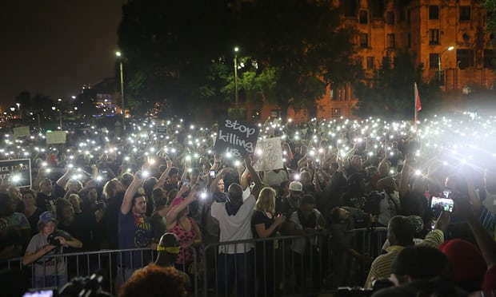

Introduction
On August 9, 2014, an 18-year-old black man by the name of Michael Brown was shot and killed by Darren Wilson, a white police officer, in the St. Louis suburb of Ferguson. That one shooting would spark months of protests and unrest in Ferguson that would plaster the headlines of news media worldwide. The Ferguson protests would bring into the national conversation intense debates over police brutality, racial inequality, justice reform and many other issues.
What our research has done is to provide an insightful, local and interdisciplinary analysis of the Ferguson activist movement. We explored the relationship between media, education and geography of the St. Louis area and how that has shaped the community activism we saw in Ferguson. While much research has been done about the political significance of the Michael Brown case, what we have focused on is the role of organizing and media activism in the aftermath of Michael Brown’s death.
Who We Are
Chapter One
Subtitle
"Really powerful quote about something related to this chapter."
This is a paragraph for chapter one. This is a paragraph for chapter one. This is a paragraph for chapter one. This is a paragraph for chapter one. This is a paragraph for chapter one. This is a paragraph for chapter one. This is a paragraph for chapter one. This is a paragraph for chapter one. This is a paragraph for chapter one. This is a paragraph for chapter one. This is a paragraph for chapter one. This is a paragraph for chapter one. This is a paragraph for chapter one. This is a paragraph for chapter one. This is a paragraph for chapter one. This is a paragraph for chapter one. This is a paragraph for chapter one. This is a paragraph for chapter one. This is a paragraph for chapter one. This is a paragraph for chapter one. This is a paragraph for chapter one.
Photo Gallery

Subtitle
"Really powerful quote about something related to this chapter."
This is a paragraph for chapter one. This is a paragraph for chapter one. This is a paragraph for chapter one. This is a paragraph for chapter one. This is a paragraph for chapter one. This is a paragraph for chapter one. This is a paragraph for chapter one. This is a paragraph for chapter one. This is a paragraph for chapter one. This is a paragraph for chapter one. This is a paragraph for chapter one. This is a paragraph for chapter one. This is a paragraph for chapter one. This is a paragraph for chapter one. This is a paragraph for chapter one. This is a paragraph for chapter one. This is a paragraph for chapter one. This is a paragraph for chapter one. This is a paragraph for chapter one. This is a paragraph for chapter one. This is a paragraph for chapter one.
Interactive Map

Go Further
"Three Years After Michael Brown’s Death, Has Ferguson Changed?"
NBC News
"Ferguson unrest: From shooting to nationwide protests"
BBC
"St Louis protests: three years since Ferguson, why hasn't anything changed?"
The Guardian
"The Ferguson Protests Worked"
The Huffington Post
"Photos From the Heart of the Ferguson Protests"
Smithsonian
"Ferguson struggles to grasp why protests turned violent"
USA Today